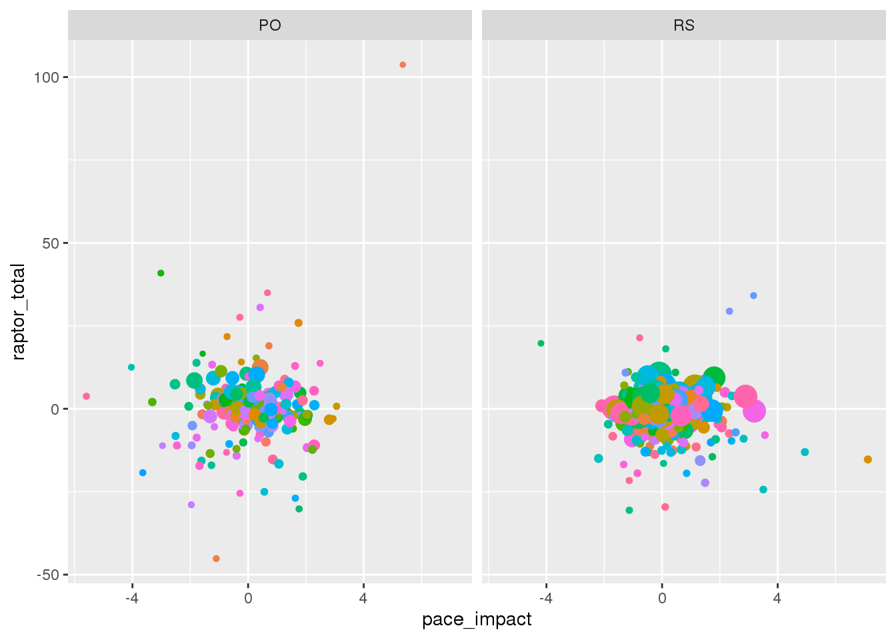

Data
library(tidyverse)
## ── Attaching packages ─────────────────────────────────────── tidyverse 1.3.0 ──
## ✓ ggplot2 3.2.1 ✓ purrr 0.3.3
## ✓ tibble 2.1.3 ✓ dplyr 0.8.3
## ✓ tidyr 1.0.0 ✓ stringr 1.4.0
## ✓ readr 1.3.1 ✓ forcats 0.4.0
## ── Conflicts ────────────────────────────────────────── tidyverse_conflicts() ──
## x dplyr::filter() masks stats::filter()
## x dplyr::lag() masks stats::lag()
RAPTOR_byplayer_latest <- read_csv("latest_RAPTOR_by_player.csv")
## Parsed with column specification:
## cols(
## .default = col_double(),
## player_name = col_character(),
## player_id = col_character()
## )
## See spec(...) for full column specifications.
RAPTOR_byteam_latest <- read_csv("latest_RAPTOR_by_team.csv")
## Parsed with column specification:
## cols(
## .default = col_double(),
## player_name = col_character(),
## player_id = col_character(),
## season_type = col_character(),
## team = col_character()
## )
## See spec(...) for full column specifications.
In this project, I am examining individual players’ impact on their team’s success using the latest_RAPTOR_by_team.csv dataset(s) from the fivethirtyeight website. The data consists of 808 observations of 23 variables. The variable pace_impact represents a player’s impact on team possessions per 48 minutes, so if it is positive that means that that player is helping to increase the pace by which their team plays. This is relevant because by increasing their team’s pace they are helping add extra possessions. The variable raptor_total represents the points above average per 100 possessions added by player on both offense and defense. The war_total represents Wins Above Replacement between regular season and playoffs, so it is another variable that measures an individual player’s ability to influence the outcome. The mp variable represents minutes played, which can help give some context since the better players in the NBA will naturally be playing more minutes.
Question 1
So how does the pace_impact of a player indicate their impact on the outcome of the game for their team? If so, what was the effect? First we need to graph the pace_impact variable to see if there is a correlation.
# graphed raptor_total vs. pace_impact, but correlated minutes played to size and war_total to color
ggplot(data = RAPTOR_byteam_latest, mapping = aes(pace_impact, raptor_total, color = war_total)) +
geom_point()
## Warning: Removed 2 rows containing missing values (geom_point).

ggplot(data = RAPTOR_byteam_latest, mapping = aes(pace_impact, raptor_total, color = war_total, size = mp)) +
geom_point()
## Warning: Removed 2 rows containing missing values (geom_point).

On the first graph most of the data values, and WAR ratings do not seem to have a consistent trend. However there are some higher data values that didn’t have a clear explanation so I decided to correlate the dot size to minutes played on the second graph. I did this because RAPTOR data is supposed to be used to determine how effctive a player is, but does not necessarily always account for sample size. In the second graph we can see that all the outlier values are smaller dots which means they are for players who do not play as many minutes which hurts their level of effectiveness compared to the other players in the league.
The difference between the two graphs shows that the pace_impact does not have much of an impact on team success. Of all the bigger dots that represent players that get a substantial minutes, none of them reach above a raptor_total rating of 25. This suggests that even if a better player helps increase the pace of play, effectively earning extra possessions for their team, it won’t make a noticable difference.